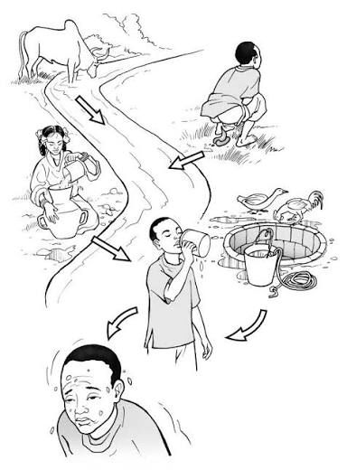

Figure showing filthy environment.
Poor sanitation is the lack of access to safe, clean and hygienic facilities for the disposal of human and household waste. Poor sanitation which can lead to infections like cholera, malaria, typhoid, diarrhea etc. is a key issue of the primary public issues caused by the breakdown and under maintenance of human waste.
Poor waste management is the improper collection, storage and disposal of solid waste, leading to environmental pollution, bad odor and disease outbreaks like malaria, mosquitoes and rodents.
Both poor sanitation and poor waste management contaminate groundwater, surface water and food, increasing disease risk.
Poor sanitation and waste management are caused by:
Figure showing the causes of Poor Sanitation and Waste Management.
Figure showing the consequences of Poor Sanitation and Waste Management.
What are the causes of Poor Sanitation and Waste Management?
Poor sanitation and waste management are caused by:Infrastructure: Lack of restrooms, latrines, trash cans and suitable landfill locations are examples of inadequate infrastructure.
Lack of maintenance: Blockages and unhygienic conditions are frequently caused by poorly maintained gutters and drainage systems.
Lack of maintenance: Blockages and unhygienic conditions are frequently caused by poorly maintained gutters and drainage systems.
Inconsistent services: Households frequently have to cope with rubbish for long stretches of time due to inconsistent waste collection and handling services.
Access to adequate sanitation facilities and hygiene goods may be restricted by lack of financial resources.
Infrastructure can be strained by a high population density, making it challenging to maintain hygienic conditions.
Poor hygiene practices: Poor sanitation is directly caused by open defecation, not washing hands and using tainted water for drinking and cooking.
Proper sanitation and waste management are vital for human health, environmental conservation and socioeconomic well-being. They limit the transmission of infectious diseases by avoiding waste from contaminating water and land, boost school attendance and dignity and assist economic growth through lower healthcare expenses and higher productivity.
The purpose of waste management is to reduce the negative impacts of garbage on the environment and human health.
Having clean and proper sanitation provides a healthy living environment for everyone, maintains the natural resources (such as surface water, groundwater and soil) and provides safety, security and dignity for individuals when they defecate or urinate. Everyone must reduce, reuse and recycle waste for a better and healthy existence.